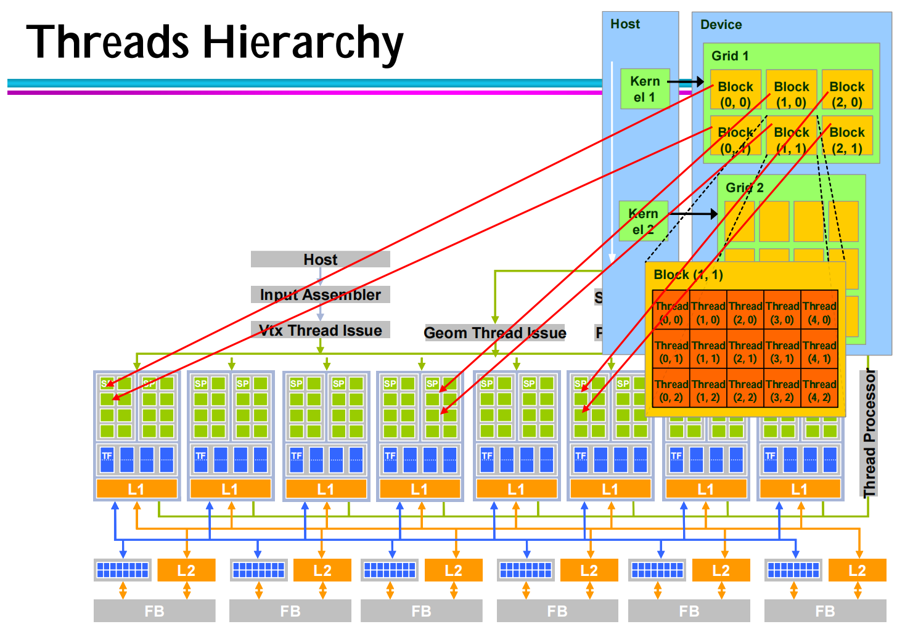

GPU简介
近年来，随着深度学习的快速发展，GPU在计算领域扮演着越来越重要的角色，已经成为了人工智能和机器学习领域的关键组件。进入大模型时代，模型近乎恐怖的算力需求需要高性能的计算资源来完成，而 GPU 具有大量的计算核心和高速的显存，使得它能够高效地处理这些计算任务，从而成为了大模型训练和推理不可缺少的工具。
插播一条新闻：
Meta engineers trained Llama 3 on computer clusters packing 24,576 NVIDIA H100 Tensor Core GPUs, linked with RoCE and NVIDIA Quantum-2 InfiniBand networks.
To further advance the state of the art in generative AI, Meta recently described plans to scale its infrastructure to 350,000 H100 GPUs.
–From Wide Open: NVIDIA Accelerates Inference on Meta Llama 3 | NVIDIA Blog
为什么深度学习需要使用GPU？
这个答案可以从下面这张图中看出端倪：
- 绿色部分是计算单元，GPU有着更多的计算核心，计算能力更强。
- 黄色部分是控制单元，CPU中有大量的控制单元，现代CPU的晶体管越来越复杂，除了“计算”，还要实现乱序执行、分支预测、高速缓存等功能；而GPU中控制单元很少，是专门用于并行计算
深度学习中存在大量矩阵运算都是并行执行的，GPU非常适合对这类高度并行性的任务进行计算加速

GPU架构
Nvdia每几年都会提出新的GPU架构，并且都是以著名的物理学家对架构进行命名。但这些更新主要是增加硬件单元的数量，组成结构基本没有变化。

下图展示了GPU的Fermi 架构（其他架构大体结构基本相同，主要是硬件数量的变化）。
一块GPU上存在多个Streaming Multiprocessor（SM），每个SM上有很多个计算核心（Core）、线程调度器（Warp Scheduler）、Shared Memory（共享内存）、SFU（特殊运算单元，如sin、cos）、Register File（寄存器组）。除了每个SM上的Share Memory，所有SM会共享Global Memory。
可以看到GPU这样的硬件结构专为大规模并行和高吞吐量而设计的，下面我们结合这种硬件结构具体讨论GPU是如何进行并行计算。
Flynn将计算设备分为四类：
- SISD：单条指令操作一条数据，例如之前介绍的简单流水线
- MISD：多条指令操作一条数据，很少
- MIMD：多条指令操作多条数据，例如VLIW
- SIMD：单条指令操作多条数据， 例如Vector Processor，GPU
GPU则是SIMD中的一种，也就是说它一条指令可以操作多条数据，更具体地说，GPU采用的是一种SIMT（Single-Instruction, Multiple-Thread）的架构，也就是一条指令可以执行多个线程。在程序运行时，GPU会同时执行大量相同指令的线程。而这些线程首先会通过一个调度器，调度到闲置的SM上，再由SM内部的Warp Scheduler调度到Core上进行计算。目前，我们还没有介绍CUDA中的概念，下一节我们将结合CUDA编程模型中的概念再一次讲述整个调度过程。


CUDA简介
GeForce 256是英伟达1999年开发的第一个GPU，最初只用作显示器上渲染高端图形，只用于像素计算。在早期，OpenGL和DirectX等图形API是与GPU唯一的交互方式。后来，人们意识到GPU除了用于渲染图形图像外，还可以做其他的数学计算，而OpenGL和DirectX等图形API的交互方式比较复杂，不利于程序员设计GPU计算，这促成了CUDA编程框架的开发，它提供了一种与GPU交互的简单而高效的方式。
CUDA环境准备
在开启cuda编程之前，首先需要检查开发环境是否具备必要的条件：
- Nvidia的GPU
- Nvidia的显卡驱动
- 标准的C编译器
- CUDA开发工具
由于我直接用了建立好的环境，建立环境的过程在此博客就不展开，可以参考以下网址：
CUDA 编程指南
CUDA 开发环境
为各种 NVIDIA 架构匹配 CUDA arch 和 CUDA gencode
建立好CUDA开发环境之后，可以通过以下命令进行检查：
nvidia-smi应该看到：

nvcc --version
CUDA编程模型
在开始CUDA编程之前，首先要了解CUDA中涉及到的概念：“grid”、“block”、“thread”。
thread：一个CUDA的并行程序会被以许多个thread来执行
block: 多个线程组成一个线程块（Block），同一个block的线程会被调度到同一个SM上，即同一个block的thread可以进行同步并可用SM上的share memory通信，不同block的thread无法通信。
grid: CUDA的一个函数叫做一个kernel，一个kernel会发起大量执行相同指令的线程

这三个概念是CUDA编程中最核心的，只要知道这些，我们就已经可以写cuda代码了，那些SM、Share Memory等硬件概念不知道都没有关系，但了解硬件结构可以帮助我们更好地对cuda代码深度优化。
既然知道“grid”、“block”、“thread”这些概念就可以写cuda程序了，那我们就尝试编写一个cuda程序hello-gpu.cu，让GPU输出“Hello World！”。
#include <stdio.h>
void helloCPU()
{
printf("Hello World!\n");
}
__global__ void helloGPU()
{
printf("Hello World! --From GPU\n");
}
int main()
{
helloCPU();
helloGPU<<<1, 1>>>();
cudaDeviceSynchronize();
}可以看到cuda程序和普通的c语言非常相似，下面我们讲讲不一样的地方：
__global__：定义这是一个cuda的kernel函数，从主机host发起并在设备device上执行。<<<1, 1>>>：定义block和threads，这里表示发起1个block，每个block里有1个线程cudaDeviceSynchronize：与许多 C/C++ 代码不同，核函数启动方式为异步：CPU 代码将继续执行而无需等待核函数完成启动。调用 CUDA 运行时提供的函数cudaDeviceSynchronize将导致主机 (CPU) 代码暂作等待，直至设备 (GPU) 代码执行完成，才能在 CPU 上恢复执行。
写好cuda代码后，我们可以使用nvcc对代码进行编译与执行：
nvcc -arch=sm_61 -o hello-gpu hello-gpu.cu -runnvcc是使用nvcc编译器的命令行命令。- 将
xxx.cu作为文件传递以进行编译。 o标志用于指定编译程序的输出文件。arch标志表示该文件必须编译为哪个架构类型。本示例中，sm_61将用于专门针对本实验运行的 NVIDIA GeForce GTX 1080 Ti 进行编译，但有意深究的用户可以参阅有关arch标志、虚拟架构特性 和 GPU特性 的文档。- 为方便起见，提供
run标志将执行已成功编译的二进制文件。
从上面的程序，我们可以知道GPU的工作任务是由CPU触发的，GPU自身是无法独立工作的。cuda程序整体的工作流程是CPU将需要执行的任务异步地交给GPU，再由GPU进行调度，最后再将计算结果同步给CPU。

假设我们想要GPU发送66个”Hello World”，我们可以简单地修改blocks和ThreadsPerBlock的数量，即可实现这项功能：
#include <stdio.h>
void helloCPU()
{
printf("Hello World!\n");
}
__global__ void helloGPU()
{
printf("Hello World! --From GPU\n");
}
int main()
{
helloCPU();
helloGPU<<<6, 11>>>();
cudaDeviceSynchronize();
}以上代码则发起了6个block，每个block里有11个线程。当然，我们也可以改成helloGPU<<<1, 66>>>();，发起了一个block，这个block里有66个线程。
Warp
具体怎么设置发起blocks和ThreadsPerBlock完全由程序员自己设置，而发起后这些block和线程在GPU中如何调度则由GPU内部硬件控制，不被程序员所操作。但为了更合理地设置blocks和ThreadsPerBlock，我们还是需要了解GPU中的调度策略。
首先是blocks的调度，同一个blocks会被调度到同一个SM，不同的blocks不保证在同一SM，为了更好地进行调度，blocks数可以设置为GPU中SM的整数倍。由于SM上的计算单元是有限的，同一个blocks中的threads会被划分成多个warp，一个warp才是GPU调度与执行的基本单元。一般来说，一个warp是32个线程，所以ThreadsPerBlock一般会设置成32的整数倍，可以让资源利用率更高。
了解了GPU中的调度逻辑，编写cuda程序时我们就可以根据手中的GPU硬件配置，合理地设置blocks和ThreadsPerBlock这两个参数。当前GPU硬件配置有很多内容，这会让我们目不暇接，在初学CUDA编程中应该关注到的是GPU上SM数量，warp size，每个block的最大线程数，每个SM最大block数。下面我们通过这段代码将GPU硬件信息打印出来。
#include <stdio.h>
#include <iostream>
int main(){
int dev = 0;
cudaDeviceProp devProp;
cudaGetDeviceProperties(&devProp, dev);
std::cout << "使用GPU device " << dev << ": " << devProp.name << std::endl;
std::cout << "SM的数量：" << devProp.multiProcessorCount << std::endl;
int warpSize = devProp.warpSize;
std::cout << "Warp size: " << warpSize << std::endl;
std::cout << "每个线程块的共享内存大小：" << devProp.sharedMemPerBlock / 1024.0 << " KB" << std::endl;
std::cout << "每个线程块的最大线程数：" << devProp.maxThreadsPerBlock << std::endl;
std::cout << "每个SM的最大线程数：" << devProp.maxThreadsPerMultiProcessor << std::endl;
std::cout << "每个SM的最大block数：" << devProp.maxThreadsPerMultiProcessor / warpSize << std::endl;
std::cout << "每个SM的寄存器数量：" << devProp.regsPerMultiprocessor << std::endl;
}nvcc -o gpu_check gpu_check.cu -run执行指令得到以下信息：
使用GPU device 0: NVIDIA GeForce GTX 1080 Ti
SM的数量：28
Warp size: 32
每个线程块的共享内存大小：48 KB
每个线程块的最大线程数：1024
每个SM的最大线程数：2048
每个SM的最大block数：64
每个SM的寄存器数量：65536
下面举一个简单的例子来说明如果根据硬件配置合理分配资源，假设一个SM上有8192个寄存器，程序员每个block设置了256个线程。
假设每个线程会占用10个寄存器，那么一个block中的线程会占用256*10=2560个寄存器，8192/2560=3.2，即一个SM可以同时加载3个block正常运行。
假设每个线程会占用11个寄存器，那么一个block中的线程会占用256*11=2816个寄存器，8192/2816=2.9，即一个SM只能加载2个block，一个SM上硬件资源就跑不满，会造成资源浪费。

由于GPU没有复杂的控制单元，在warp中所有线程都会执行相同的指令，这意味着在遇到分支时，warp需要一些特殊的处理。如下图所示，当遇到分支时，warp中32个线程也许有些线程满足条件，有些线程不满足条件，但一个warp中所有线程执行指令的时序是一致的，不满足分支条件的线程必须等待需要执行指令的其他线程，这也意味着分支指令会影响GPU的运行效率，在程序设计时应该尽量少用，或者在写分支条件时尽可能保证一个warp中所有线程同时满足条件或者同时不满足条件。

最后提一嘴，warp为什么叫warp？warp的英文意思有”编织物的纱线”，我们看下面这张图，假如说一个thread就是一条线，warp则是在机器上并发处理的很多条线。

CUDA编程实战
未完待续…